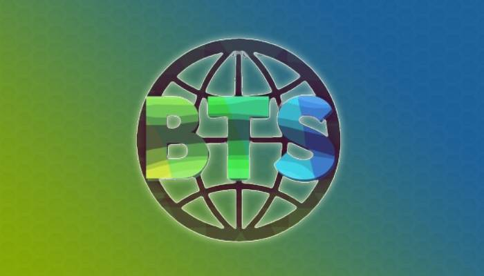

Pour permettre à ma classe un lieu pour échanger, j'ai développé un bot ainsi qu'un serveur discord permettant d'échanger différentes informations. J'ai rendu le bot opensource pour permettre à ma classe de l'améliorer. Il a même eu un module d'élection de délégués lors des éléctions de la première année. Le bot est depuis très peu mis à jour et nécessiterais une refonte si il devais être utilisé de nouveau activement sur un nouveau projet. Développé avec JDA (Le SDK Java de Discord le plus populaire).
